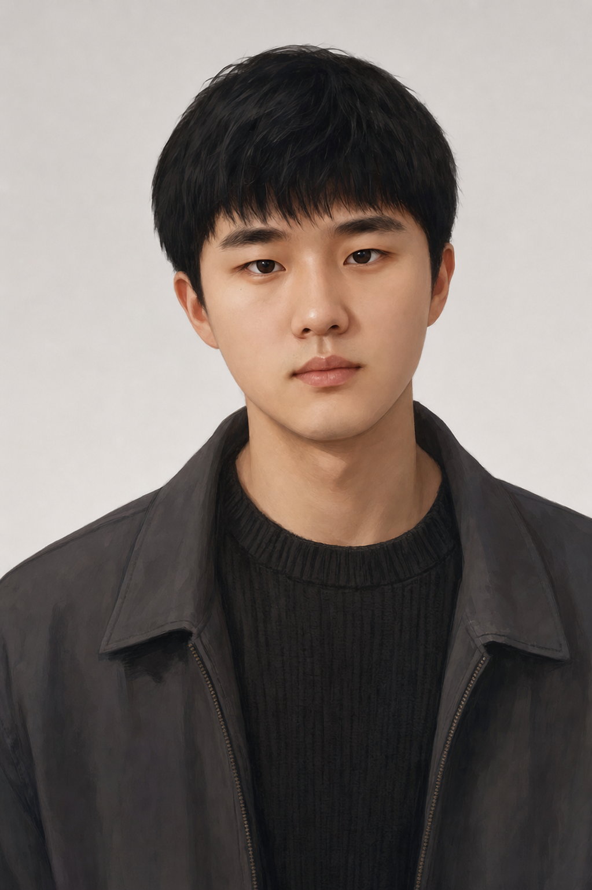

김용식
기본 정보
- 이름: 김용식
- 생일: 1989년 12월 7일
- 국적: 대한민국
- 2026년 기준 나이: 만 36세
- 2008년 1월 1일 기준 나이: 만 18세
- 2008년 1월 1일 기준 상태: 고등학교 졸업 전, 겨울방학 중
- 핵심 전제: 2008년 1월 1일부터 자신의 삶을 다시 선택하기 시작한 남자다. 회귀 장치는 작가용 내부 설정으로만 두고, 원고 표면에서는 우연, 충동, 선택, 운이 겹친 사람처럼 읽히게 한다.
외형
- 키: 182cm
- 체형: 고등학생치고는 어깨와 등, 팔의 선이 뚜렷한 탄탄한 근육형이다. 과하게 벌크업된 몸이 아니라 생활 속에서 균형 있게 단련된 몸처럼 보인다.
- 얼굴: 원래 김용식의 인상을 크게 벗어나지 않지만, 얼굴선이 정리되고 눈매가 깊어져 이전보다 확실히 매력적으로 보인다.
- 헤어: 검은 직모에 자연스러운 볼륨이 있고, 앞머리가 가볍게 내려온다. 너무 꾸민 머리보다 2008년 또래 남학생다운 단정한 인상이다.
- 목소리: 낮고 안정적인 톤이다. 말을 길게 하지 않아도 상대가 귀를 기울이게 만드는 힘이 있다.
- 분위기: 겉으로는 또래 고등학생처럼 웃을 수 있지만, 돈과 관계 앞에서는 가끔 또래보다 빨리 계산하려는 기색이 나온다. 그것을 어른스러움의 증거처럼 강조하지 않는다.
성격
- 성격 키워드: 현실적, 계산적, 감정 억압, 욕망의 해방, 자기결정권, 관계의 대등함, 책임 회피와 성장 가능성
- 겉으로 보이는 태도: 말수가 아주 많지는 않지만 단답형으로만 말하는 사람은 아니다. 여유 있어 보이려 애쓰고, 상황을 빨리 읽으려 하지만 낯선 현실이 닥치면 말이 길어지거나 괜히 설명을 덧붙인다.
- 속으로 숨기는 감정: 자신이 가족과 주변 사람에게 어떤 의미였는지에 대한 허기, 오래 눌러온 인정 욕구, 설명하기 어려운 후회와 피로를 숨긴다.
- 장기 선택을 대하는 방식: 투자, 돈, 진학, 관계에서 남들보다 과감한 선택을 할 수 있지만, 원고에서는 미리 정답을 안다는 확신보다 호기심, 충동, 계산, 우연, 운이 겹친 결과처럼 보이게 한다. 사람의 마음까지 계산할 수 있다고 착각하는 약점이 있다.
- 돈과 기회를 대하는 태도: 돈은 잃으면 끝이라는 감각이 강해 신중하게 다루려 한다. 그러나 큰돈을 실제로 쓰는 순간에는 손이 굳고, 서류와 시선과 가족에게 숨겨야 하는 동선 때문에 긴장한다. 차갑게 계산하려다가도 20살의 허세와 해방감이 먼저 튀어나올 수 있다.
- 사람과 관계를 대하는 태도: 초반에는 사람, 특히 여자 관계를 돈보다 가볍게 여긴다. 다가오는 사람을 굳이 밀어내지 않고, 새로운 관계를 찾는 욕망을 잘 억제하지 못한다.
- 자기결정권과 주도권: 상대를 지배하거나 굴복시키려 하지 않지만, 자신도 상대에게 끌려다니거나 삶의 주도권을 넘기지 않는다. 관계는 이기고 지는 문제가 아니라 서로 자발적으로 함께하는 것이라고 본다.
- 관계의 한계선: 사랑하는 사람에게 양보하고 먼저 사과할 수 있지만, 애정, 이별, 질투, 돈, 죄책감으로 자신을 조종하려 하면 경쟁하지 않고 관계 자체에서 손을 놓는다.
- 자존심: 잘못을 납득하면 인정하고 사과할 수 있다. 그러나 버림받지 않기 위해 비굴하게 매달리거나, 모욕을 감수하며 관계를 유지하지 않는다.
- 20대의 여자 관계 패턴: 이미 사귀는 여자에게 과하게 집착하지 않으려 한다. 상대의 기분이 나쁘거나 트러블이 생기면 붙잡고 풀기보다, 신경을 끊고 다른 여자를 만나러 가거나 클럽으로 빠지는 식으로 막나갈 수 있다.
- 20대의 관계 회피: 원래는 여자친구의 기분 변화나 불편함을 계속 신경 쓰는 타입이었지만, 2008년 이후에는 더 이상 그렇게 끌려다니지 않겠다고 마음먹는다. 이 변화는 성숙함보다 억눌림이 풀린 반작용에 가깝다.
- 핵심 결함: 돈은 통제하지만 욕망은 통제하지 못한다. 사람은 바꿀 수 있다고 여기며 관계의 무게를 늦게 깨닫는다.
- 성장 방향: 시간이 지나며 사람은 쉽게 바꿀 수 있는 대상이 아니라, 자신의 선택 속에 남는 존재라는 사실을 배워간다.
배경
- 가족: 2008년에는 어머니, 아버지와 함께 산다. 아버지는 가까이 있어도 언급하고 싶지 않은 사람처럼 다룬다.
- 가족 운용: 아버지와의 문제는 초반 원고에서 직접 설명하지 않는다. 아버지는 존재하지만 그림자처럼 두고, 김용식의 반응과 침묵으로만 암시한다.
- 가족 장기 사건: 2015년에 어머니와 김용식이 따로 나와 살게 되는 흐름이 있다. 이 사건은 초반에 공개하지 않고 장기 서사 카드로 둔다.
- 학교: 2008년 1월 1일 기준 고등학교 졸업 전 겨울방학 상태다. 학교 세부 설정은 아직 확정하지 않는다.
- 친구 관계: 같이 PC방에 가고, 게임을 하고, 별다른 거창한 사연 없이 어울리던 평범한 친구들이 있다.
- 대학: 평택대학교 정보통신학과에 진학하는 흐름을 기본 경로로 둔다.
- 생활권: 용인 수지를 주요 생활권으로 둔다.
- 이후의 직업/생활 상태: 구체적으로 언급하지 않는다. 억눌려 있던 감정과 관계 욕망이 2008년 이후 폭발하는 흐름을 우선한다.
- 가장 큰 후회: 가족 안에서 자신이 어떤 의미였는지, 자신이 감당한 희생이 제대로 전해졌는지에 대한 감정이 남아 있다.
취미와 특기
- 야구: 야구 관람을 좋아하고 사회인야구도 한다. 사회인야구 기준 투수와 3루수를 맡을 수 있다.
- 투수 스타일: 한국 사회인야구 3부리그에서 적당한 에이스 수준이다. 평균자책점은 팀 수비력에 따라 흔들리지만 대체로 2~3점대가 가능하다.
- 구종과 구속: 우투. 직구 구속은 110~115km/h 정도이며, 직구, 슬라이더, 체인지업을 던진다.
- 제구: 구속보다 제구가 강점이다. 볼넷을 싫어해서 차라리 가운데 직구를 던져 맞거나 빗맞은 범타를 유도하는 편이다.
- 경기 운영: 경기 진행 템포가 좋고, 맞춰 잡는 투수다. 압도적인 구위보다 야수들과 함께 즐겁게 경기를 풀어가는 타입이다.
- 3루수: 투수 출신이라 1루 송구는 좋다. 다만 강한 타구를 조금 무서워해서 수비 자체가 아주 뛰어나지는 않다.
- 타격: 우투좌타. 사회인야구의 타고투저 환경에서 타율은 약 0.332 수준이다. 홈런을 잘 치는 장타형은 아니다.
- 탁구: 동네탁구 기준으로 랠리가 잘 이어지는 정도다. 드라이브, 쇼트, 커트 등 기본 기술은 충분히 하지만 아마추어 상급자에게는 어렵다. 상대가 즐겁게 칠 수 있게 잘 넘겨주는 편이다.
- 볼링: 평균 120점 정도다. 전혀 못 치지는 않지만 동호회에서 잘 치는 수준은 아니다.
- 구기종목 전반: 대체로 못하지는 않지만 압도적인 재능형은 아니다. 승부보다 템포와 즐거움을 살리는 쪽에 강하다.
- 게임: 게임은 전반적으로 매우 잘한다. 장르 적응력이 좋고, 처음 잡은 게임도 시스템을 빨리 이해한다.
- 선호 게임군:
몬스터 헌터,젤다의 전설,스타크래프트,워크래프트계열을 특히 좋아하고 잘한다. - 스타크래프트: 시대회 4강까지 올라간 적이 있으며, 준아마추어 선수에 가까운 실력을 갖고 있다. 2008년 PC방과 또래 문화에서 그의 실력이 가장 직접적으로 드러나는 영역이다.
- 게임 성향: 손재주만 좋은 타입이 아니라 맵, 자원, 타이밍, 상대 심리를 함께 읽는다. 승부욕이 있지만, 실력 차이가 큰 상대와 할 때는 일부러 템포를 맞춰주기도 한다.
- 애니메이션과 만화: 중고등학교 시절부터 완전한 덕후 성향이 있다. 메카물과 소년만화를 특히 좋아한다.
- 선호 작품군:
공각기동대,풀 메탈 패닉!,신세기 에반게리온,코드 기어스,교향시편 에우레카 세븐,카우보이 비밥,오! 나의 여신님,작안의 샤나계열을 좋아한다. - 헬스: 몸을 만들기 위한 목적도 있지만 본질적으로는 야구를 잘하기 위한 보조수단이다. 그래서 어깨와 허벅지가 특히 좋다.
- 사진: 하고 싶은 취미에 가깝다. 건축물, 도시의 선, 거리 풍경을 찍는 것에 관심이 있다.
- 우주: 우주와 천문에 대한 호기심이 있다. 거대한 시간과 거리, 인간의 작은 삶을 함께 떠올리게 하는 소재로 반응한다.
말투
- 기본 말투: 담백하지만 단답형만 쓰지 않는다. 짧게 받을 때도 있고, 숨기고 싶은 게 있으면 설명이 길어지거나 질문을 되받으며 시간을 번다.
- 여유를 연기할 때: 낮은 톤으로 농담처럼 흘리지만, 속으로는 상대 반응을 살핀다. 말이 매끄럽게 나와도 손이나 시선이 먼저 흔들릴 수 있다.
- 당황했을 때: 말이 잠깐 끊기거나, 일부러 웃으며 넘긴다. 완전히 침착한 척하다가 필요 없는 말을 덧붙여 스스로 티를 낼 수 있다.
- 숨기는 게 있을 때: 질문을 바로 받지 못하고 설명을 길게 하거나, 웃으며 넘기려다 필요 없는 말을 덧붙인다.
고정 운용 메모
- 2008년의 몸과 사회적 위치는 고등학교 졸업 전 남자다.
- 주변 사람에게는 갑자기 돈과 선택의 기준이 달라진 고3으로 보인다. 이 변화를 어른스러움이나 초월성으로 설명하지 않는다.
- 투자와 큰 선택은 미리 정답을 맞힌 것처럼 쓰지 않는다. 호기심, 충동, 검색, 우연, 운, 뒤늦은 합리화가 겹친 결과처럼 보이게 한다. 사람의 반응, 연애 감정, 소문, 즉석 선택까지 정확히 예측하는 식으로 쓰지 않는다.
- 큰돈을 쓰거나 비싼 물건을 살 때 담담한 초인처럼 보이지 않게 한다. 계산, 흥분, 죄책감, 숨길 방법, 판매자의 시선, 가족에게 들킬 불안을 함께 보여준다.
- 외형과 목소리는 매력적으로 보정되었지만, 기존 김용식의 인상을 완전히 벗어나지는 않는다.
- 초반 김용식은 매력적이지만 반드시 좋은 사람은 아니다. 관계에서의 미숙함과 욕망의 과잉이 장기 성장축이 된다.
- 취미는 현실적인 생활감과 관계 장면을 만드는 데 사용한다. 단, 게임은 김용식이 실제로 재능형에 가까운 영역이다.
- 로또 당첨 사실은 아무에게도 말하지 않는다.
- 돈, 자산, 복권 기록은 이 파일에 적지 않고
states/finance_state.json,states/lottery_records.json에서 관리한다.